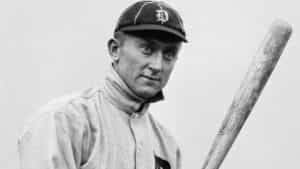
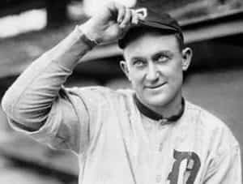

Quintus can be found at qcurtius.com. He is the author of the books On Duties, Thirty Seven, Sallust: The Conspiracy Of Catiline And The War Of Jugurtha, and other books. His work has been reviewed at Taki's Magazine. He can be followed on Twitter


By now everyone has been reminded that the media is not infallible. It is composed of very fallible human beings who make mistakes with the same regularity as all the rest of us. I was recently reading a bit about something in statistics called “Galton’s Problem,” an observational dynamic named after its discoverer, Sir Francis Galton.
To state it very crudely, Galton’s Problem is a situation resulting when observers assume that certain things are separate and discrete, when in fact they are not. For example, those who failed to predict Donald Trump’s electoral victory assumed that social conditions in the United States were isolated from those of the rest of the world. Such people failed to notice the evidence of widespread public anger in many other countries, most notably England, Italy, France, and Hungary.
Sir Francis Galton
Failure to take into consideration the “big picture” is still forgivable, of course; no one can be right all the time, or even most of the time. Systems in the modern world suffer from too much input and data, rather than too little. But deliberate lying is quite another matter. And it is undeniable that some mainstream media outlets have deliberately sought to conceal the truth on a variety of domestic and foreign issues. Rather than act as a check on governmental power, the media has actually become an arm of government power, enforcing doctrinal orthodoxy with a variety of carrots and sticks that have proven to be reasonably effective.

Individual journalists can play significant roles in this process. Consider a favorite example of mine, the case of famed baseball player Ty Cobb. I’ve been an admirer of Cobb for a very long time, ever since reading his autobiography as a boy. Something never quite felt true about all those stories that other biographers would tell about him. The worst of these was sports writer Al Stump, whose biography of Cobb has now been discredited as mostly fabrication.
Stump was granted exclusive access to Ty Cobb in 1960 and 1961 for his biographical purposes. Cobb shared with him many intimate details of his life and career; but instead of faithfully reproducing those recollections, Stump embellished, slanted, and outright fabricated numerous anecdotes designed to cast Cobb in the worst possible light. Stump portrayed Cobb as a southern racist (Cobb was from Georgia), a misogynist, and even a murderer. Cobb was not alive at the time all these stories began to circulate and was unable to defend himself.
To add insult to injury, Stump’s writings were used as the basis for a terrible 1994 film called Cobb, which starred Tommy Lee Jones. The film is a tissue of lies and distortions that deserved to—and did—flop at the box office. The real Ty Cobb was a complex, driven, and highly intelligent figure, who knew how to court controversy when he had to, but was actually a gentleman by the standards of the era. Readers interested in further reading should consult the wonderful biography by Charles Leerhsen entitled Ty Cobb: A Terrible Beauty.
A famous photo of Cobb stealing third base
To begin with, Cobb used brains rather than brawn to beat his opponents. He made careful studies of all the top players of his day and crafted strategies designed to exploit their weaknesses. For example, when he learned that pitcher Walter Johnson hated hitting batters with pitches, Cobb would crowd the plate to force Johnson to walk him. He learned how to get inside the heads of his adversaries, forcing them to lose their tempers; when they did, Cobb would steal bases right under their noses. He remains one of the few players in history who knew how to steal home base.

One legend about Cobb that has persisted is that he was a violent brawler. This is simply not true. It is true that men of his era got into fistfights often—it was part of a healthy masculine culture back then—but he never gratuitously assaulted or struck anyone. The few incidents that have been held out as examples of his misbehavior (e.g., a fight with a black groundskeeper and assorted hotel brawls) prove to be on closer inspection nothing more than the standard types of fights that physically-minded men like him became entangled with. Nearly all ballplayers of his era engaged in them, including Babe Ruth.
Al Stump’s character assassination of Cobb went even further, painting him as an unreconstructed southern “racist” who had a grudge against blacks. This is completely false. Cobb was actually one of the few early supporters of integration in the big leagues. When asked his opinion about subject by the Sporting News in 1952, he said, “The negro has the right to compete in sports, and who is to say he has not?”
He had nothing but compliments for black athletes like Willie Mays and Jackie Robinson, and players in the Negro League whom Cobb interacted with in the 1920s confirm that there was no trace of prejudice in Cobb’s makeup. Cobb mentored younger players, corresponded with fans with personalized letters, and helped found a hospital and a college education fund.
Cobb was certainly no angel, but in hindsight he was nothing more than an aggressive, daring man who played professional sports at a time when things were much less regulated than they are now. Cobb himself may even have allowed spurious tales about himself to circulate in order to court publicity. But he had a limit, and complete fairy tales he would not tolerate.
Stump’s lies have been so pervasive and persistent that the mythology surrounding Cobb will take decades to undo. If anything, Cobb was too trusting in letting a man like Stump into his confidence. Cobb was so angry with Stump’s hatchet job that he was preparing to sue to prevent publication of Stump’s writings in 1961, just before his death. The terrible 1994 film Cobb only added more oil to the fire.
Malicious journalism can do serious damage. Sometimes the damage comes from ignorance, other times from deliberate peddling of falsehood. The motives for lying—whether coming from money, fame, or the desire to “virtue signal”—can always be found if one digs below the surface. In the modern era, the default rule must be to seek independent confirmation of news stories, and to remember that journalists are subject to the same human emotions and weaknesses as all the rest of us.
Read More: An Examination Of Cult Leader Game